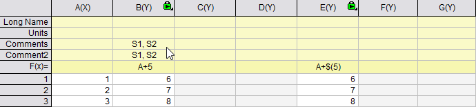
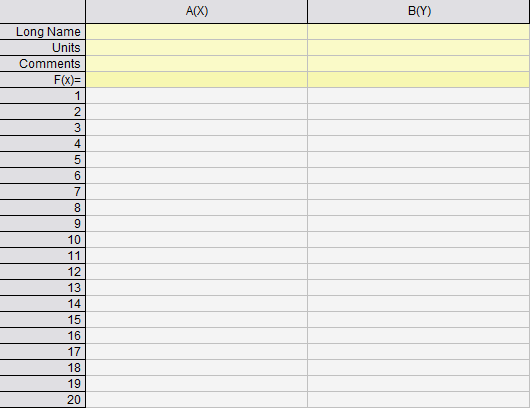
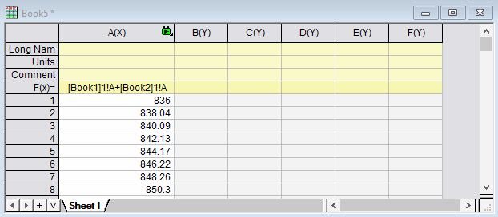
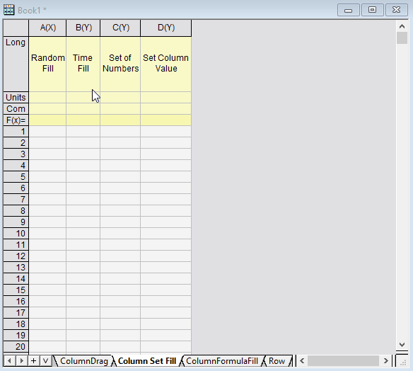

FAQ-1144 Wie fülle ich Zeilen bzw. Spalten automatisch mit Daten?
Autofill_Row_Column_Data
Letztes Update: 02.09.2022
Origin bietet mehrere Wege, um Spalten und Zeilen automatisch mit Daten zu füllen.
Zellenformeln und Spaltenformeln können definiert und dann gezogen werden, um weitere Zellen zu füllen.
 |
Sie können zwischen numerischer und Zahlenansicht im Arbeitsblatt wechseln über
-
- die Schaltfläche Formel zeigen
 auf der Minisymbolleiste auf Arbeitsblattebene oder auf der Minisymbolleiste auf Arbeitsblattebene oder
- im Hauptmenü Bearbeiten: Editiermodus (Strg + Alt + B).
|
Zellenformeln
Origin unterstützt das Füllen eines Zellenblocks durch diagonales Ziehen.
- Verwenden Sie die Notation $, um entweder die Spalte oder Zeile festzulegen, wenn Sie die Füllung ziehen.

- Klicken Sie doppelt auf die untere, rechte Ecke der Zelle, um die Füllung mit der ausgewählten Zellenformel automatisch bis zum Spaltenende durchzuführen.

- Verwenden Sie die Referenzsyntax für Arbeitsmappen und -blätter, um die Daten aus anderen Arbeitsmappen oder -blättern in Zellenformeln zu kombinieren.

- Zellen der Spaltenebschriftung unterstützen die automatische Füllung ebenfalls. Halten Sie die Strg-Taste während des Ziehens oder Doppelklickens gedrückt, um ohne Inkrementierung zu füllen.
- 
- Wenn Sie die Syntax von Zeilenreferenzen in eckigen Klammern verwenden, Spalte[Zeile] wie sum(A)[1] oder A[1], um automatisch anzupassen, dass die Zeilenreferenzen beim automatischen Füllen relativ sind, drücken Sie beim Ziehen mit der Maus die Strg-Taste.
Spaltenformeln
- Klicken Sie doppelt auf die untere, rechte Ecke der Formelzelle (F(x)), um alle Zellen zur Rechten automatisch zu füllen. Halten Sie die Strg-Taste während des Ziehens oder Doppelklickens gedrückt, um ohne Inkrementierung zu füllen. Verwenden Sie die Notation $(), um eine Konstante festzulegen.

- Verwenden Sie die Arbeitsmappe und die Blattreferenzsyntax zum Kombinieren von Daten aus anderen Arbeitsmappen oder -blättern in Spaltenformeln.
Bei Spaltenformeln ist $(j) der Spaltenindex der aktuellen Spalte.
- 
- Wenn Sie die Spalte ShortName in der Syntax verwenden, drücken Sie die Strg-Taste während des Ziehens, um mit Inkrementierung automatisch zu füllen.
- 
- 
Stichwörter:kategoriale Nummer zeigen, Index der Kategorien, Kategoriewert